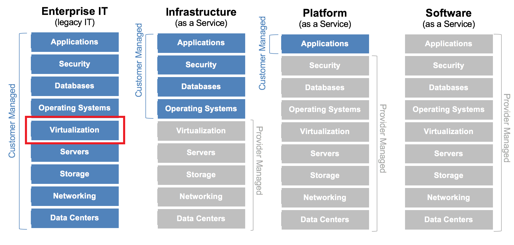
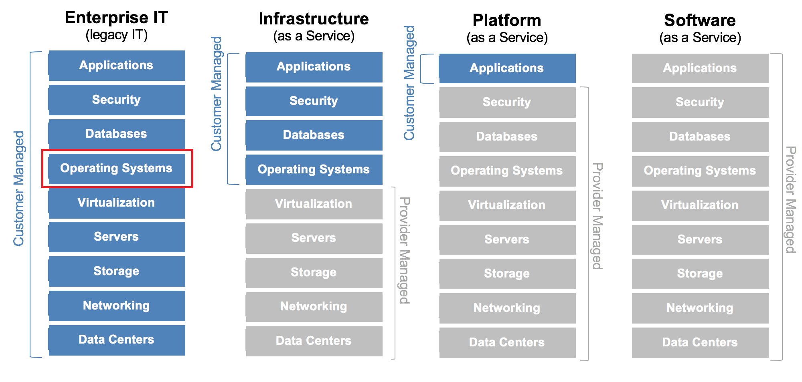
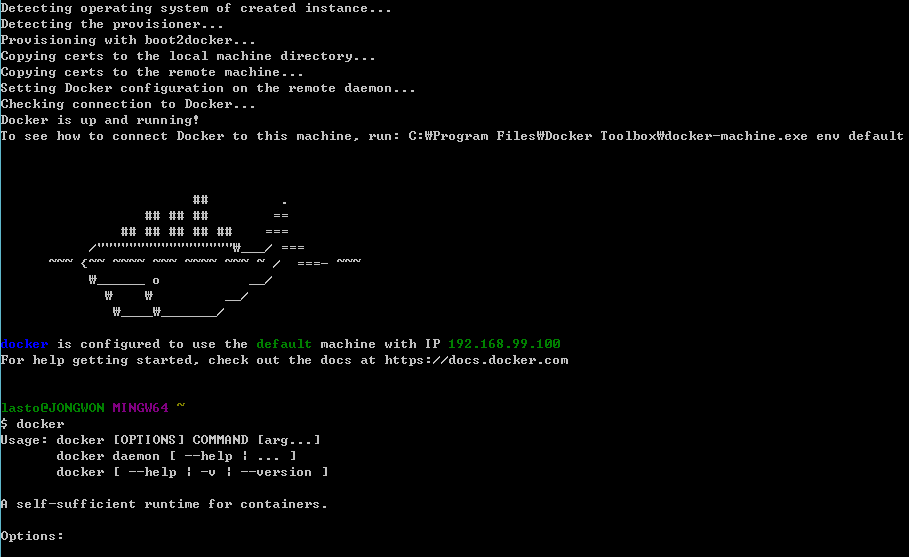

비전공자가 바라본
Created by Jongwon
Docker?
2013년 3월 출시된 오픈소스 컨테이너
Google cloud Platform, AWS, Microsoft Azure등의
클라우드 서비스에서 공식 지원
Container란
1982년에 이미 나온 리눅스 커널의 기술 중 하나로
대표적인 것이 Docker
Unix(Solaris, HPX) 운영체제에도 포함되어 있음
그동안 Virtualization, Partitioning 기술로
빛을 보지 못하다가
2013년 구글의 Docker 프로젝트가
Container 기술을 이용하면서 각광을 받기 시작
실제로 Google의 모든 서버 시스템은
컨테이너 형태로 운영하고 있다
런타임(실행 환경)방식에 의존하는 애플리케이션들이
하나의 패키지 형태로 묶여있는 것
운영체제에서는 하나의 커다란 프로세스로 보일 뿐
비슷하지만 다르다!
가상화와 컨테이너
추상화의 대상이 다름

추상화의 대상이 다름
추상화의 대상이 다름


컨테이너의 특징
하드웨어를 추상화하지 않기 때문에
메모리 접근, 파일 시스템 접근, 네트워크 전송 속도가
가상화에 비해 빠름
리눅스 커널만 있으면 언제, 어디서든 실행
커널 버전, HOST 배포판 관계없음!HOST에서 실행되면 Container에서도 실행됨!
단점
보안상으로 취약점이 있음 이미지의 신뢰성이 없음
특정 OS만의 고유한 기능은 사용할 수 없음
Docker란 Container 기술을 쉽고 가볍게 사용하기 위한
자동화 툴
이미지 생성과 배포에 특화
Docker 설치
Windows에도 설치가능!

Oracle이 설치되어 있는 우분투의 이미지가 담긴
컨테이너를 Windows에 설치된 Docker로 시연해 보겠습니다.
명령어는 docker --help로 알 수 있습니다.
GitHub와 비슷합니다.
docker search oracleDocker Repository에서 이미지 가져오기
docker pull unameless/oracle-xe-11g가져온 이미지 확인
docker images컨테이너 생성
docker run --help로 run 명령어에 관한 옵션을 볼 수 있습니다.docker run -i -t --name oracle -p 49160:22 -p 49161:1521 wnameless/oracle-xe-11g /bin/bash
sqlplus를 실행하여 접속할 경우
다음과 같은 오류가 납니다.
sqlplus
Enter user-name: SYSTEM
Enter password: oracle
Docker는 운영체제를 추상화합니다.
MINGW64는 윈도우로 포팅한
GNU 소프트웨어 도구모음입니다.
결국 커널은 윈도우라는 이야기입니다.
오라클을 실행하려면
sysctl.conf에서 커널 수정작업을 해야합니다.
Docker 컨테이너 내에서
호스트의 공유메모리 설정을 할 수 없으므로
오류가 나는 것입니다.